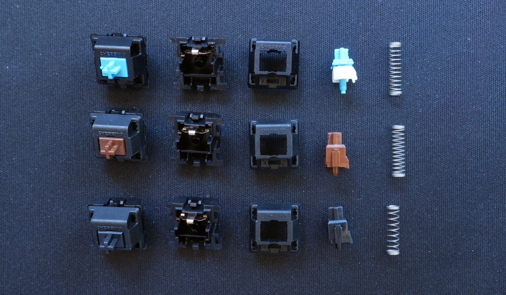
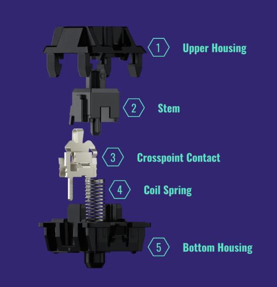
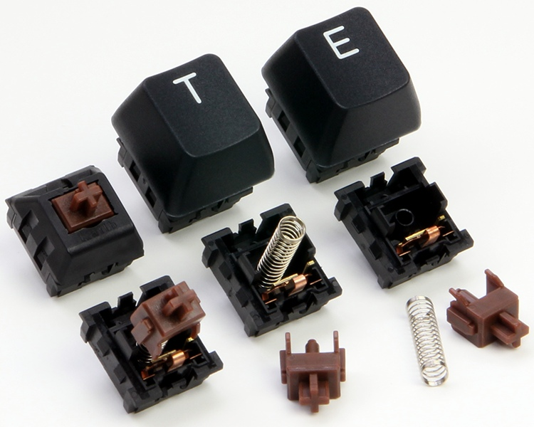
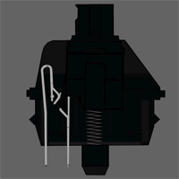
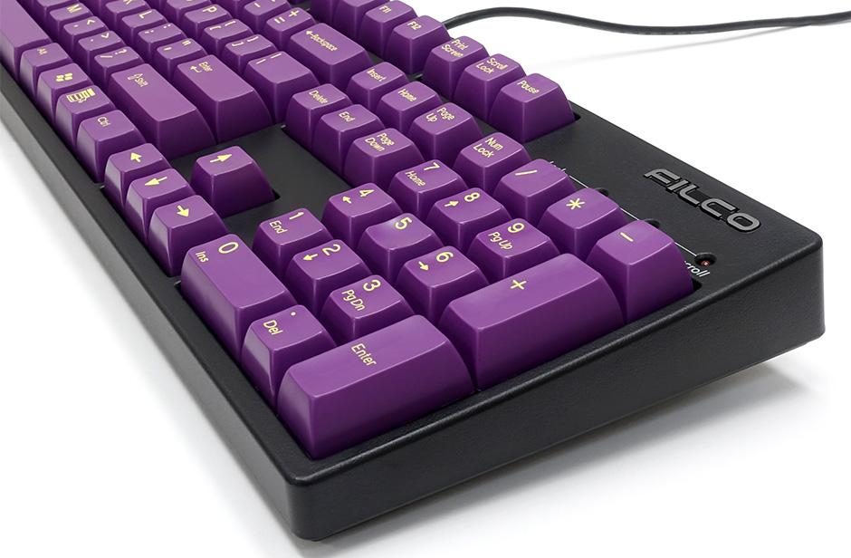
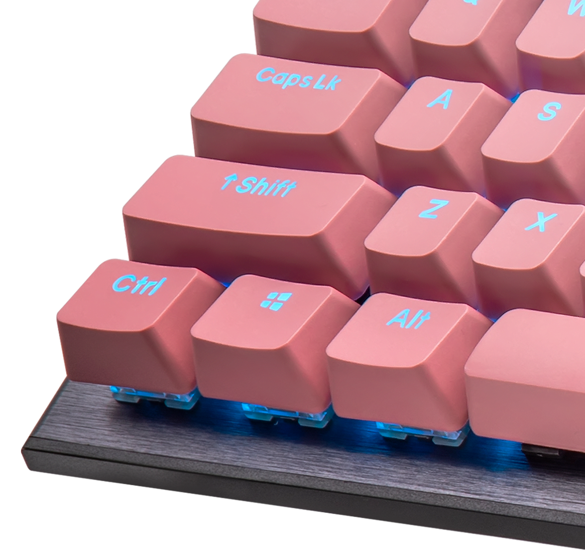
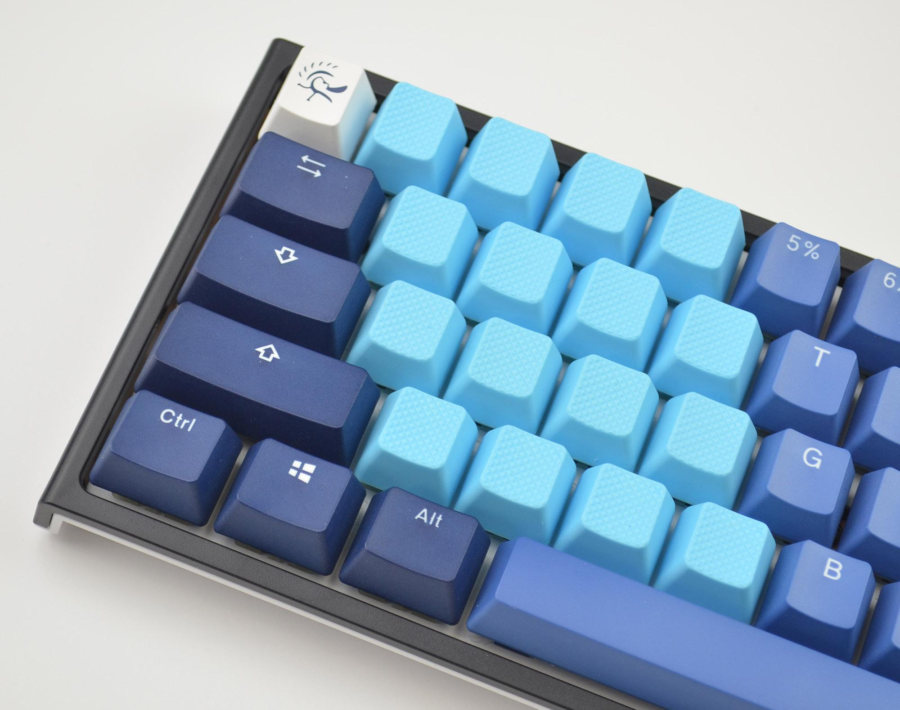

Basic Types of Switches and Keycaps
The term "membrane keyboard" is one that most of us are familiar with. It's the keyboard that came with your computer,
the one provided by your office, and even the beautiful silver board with the fruit on the back. They all have one thing
in common: you get what you see. Mechanical switches "solve" all of these issues by utilizing universal parts that can be
swapped, repaired, and customized as desired. The mechanical switch allows you to completely customize the feel, sound,
and even "speed" of your keyboard.
Cherry was there from the beginning. Cherry MX switches serve as the cornerstone for modern mechanical keyboards and
keyboard switches. They are the creator, the prototype, and the archetype. Manufacturers often offer three switch colors
in prebuilt mechanical keyboards: red, blue, and brown. Almost every major switch maker sells these switches. I will
display all of the MX Cherry color switches on this page.
These are the basic parts of mechanical switches
Upper Case
The upper housing of the mechanical switch serves as the switch's precision guiding mechanism. The upper housing holds the switch's other components together in a tight and compact arrangement. Because mechanical switches involve the physical interactions of many parts, it is critical that a housing protects all of these working parts. When the user presses on the key caps, the upper housing guides the stem of the mechanical switch. Consistent keystrokes are nearly impossible to achieve without an upper housing to guide the stem. The upper housing makes typing more consistent by always guiding the stem in the same direction.
Upper Housing
The upper housing of the mechanical switch serves as the switch's precision guiding mechanism. The upper housing holds the switch's other components together in a tight and compact arrangement. Because mechanical switches involve the physical interactions of many parts, it is critical that a housing protects all of these working parts. When the user presses on the key caps, the upper housing guides the stem of the mechanical switch. Consistent keystrokes are nearly impossible to achieve without an upper housing to guide the stem. The upper housing makes typing more consistent by always guiding the stem in the same direction.
Stem
The mechanical switch's stem is a long, extended plastic stick that makes contact with the keycap on top. When a user pushes a keycap, he or she is actually exerting force on the stem. The mechanical switch's stem descends through the upper housing's guiding and registers the keystroke with the cross-point contact. These are typically metal contact leaves that transmit an electrical signal to the PCB (Printed Circuit Board) and, through the PCB, to the computer, indicating that a key has been pressed. Stems also play an important role in the mechanical switch. The keystroke feel of each keypress is controlled by stems.
Cross-point Contact
The crosspoint contact is often made up of metallic leaves that generate and transmit the electrical signal associated with each keypress. When a key is pressed, the force is transferred to the stem of the mechanical switch. As the stem falls, it brings the two metallic leaves that form the electrical signal into touch. This is logged as a keystroke. This electrical signal is sent to the PCB, which informs the computer about which key was pressed. The crosspoint contact connects the physical and electrical worlds by activating the signal required to register the keystroke.
Coil Spring
The coil spring is located at the base of the mechanical switch. This coiled spring's function is to determine the actuation force required for the keystroke. Mechanical switch designers may adjust how hard you need to press down on the key by modifying how rigid or flexible this coiled spring is. A stiffer key requires more force to operate, whereas a more flexible key requires less force to operate.
Bottom Housing
The keyboard's bottom housing is similar to the upper housing in that it houses the mechanical switch from the bottom. This is also the location where the mechanical switch is installed. It usually has a way to connect the crosspoint contacts to the PCB. Overall, everything is held together by the bottom housing.
Various Actuation Types
There are three types of actuation in switches: linear, clicky, and tactile. Here's a quick rundown of what they mean:
Linear: A quiet keystroke that is smooth and steady.
Tactile: A tiny bump with considerable loudness on each keystroke.
Clicky: A slight bump with a loud click sounds on each keystroke.
We'll go over the Cherry MXs in each category and discuss what makes them unique.
MX Cherry Blue Switches

Cherry MX Blues are the most well-known clicky choice. They generate a click noise with each keystroke and then bounce back, ready for more clicking. There will also be a noticeable tactile bump. These are ideal for folks who enjoy gaming or typing in a restricted place with no one else nearby.
Cherry MX Blues offer an actuation force of 60g and a bottom-out force of 60g, making them appropriate for people who type normally. The entire travel distance is 4mm, with an actuation distance of 2mm.
MX Cherry Green Switches

The Cherry MX Greens have a click noise comparable to the Blues, but with a more prominent bump and a heavier overall feel. Excellent for people with lead fingers who tend to bottom out on lighter springs.
The actuation force of the MX Greens is 80g, and the bottom out force is 90g. This is not a good choice for folks who type quickly. The MX Greens have a total travel distance of 4mm and an actuation distance of 2mm.
MX Cherry Red Switches

Cherry MX Reds are linear actuating switches with a low spring force. These are ideal for gaming, but if you have lead fingertips, these may not be the best choice. Cherry MX Reds are quieter than tactile and clicky models like the Brown and Blue. They feature a bottom out force of 75g and an actuation force of 45g. The MX Reds have a total travel distance of 4mm and an actuation distance of 2mm, which is usual for Cherry MX.
MX Cherry Black Switches
Cherry MX Blacks are essentially identical to Cherry MX Reds, with the exception of a higher actuation force. Because the spring inside is stiffer, each Black will seem heavier, which is ideal for individuals with a heavy keyboard. Cherry MX Blacks have an actuation force of 60g and a bottom out force of 85g, making them 10-15g heavier than the Reds. The Blacks, like the Cherry MX Reds, are ideal for gaming and may also be used for typing, albeit they are more difficult to locate on a keyboard.
MX Cherry Brown Switches

Cherry MX Browns are the most popular option right now; they are ideal for typing and may also be used for gaming. Because of the increased friction at the tactile bump, tactile actuations are slightly louder than linear actuations. You'll hear the bump and bottoming out on each keystroke, but it won't be as loud as a clicky choice. Cherry MX Browns feature a total travel distance of 4mm and an actuation distance of 2mm. The actuation force is 55g, with a bottom out force of 60g, giving them a very natural feel.
Basic Examples of design profiles of Keycaps
OEM [Original-Equipment-Manufacturer]
OEM key caps, or original equipment manufacturer key caps, are the most prevalent type of key cap and are frequently found in mass-produced keyboards. They are usually composed of ABS plastic and come in a standard form and color. POM key caps are widely used in OEM keyboards. POM (Polyoxymethylene) is a type of material noted for its toughness and resilience to wear and tear. Most OEM key caps have a textured concave surface that allows you to feel where your fingers should be without having to look at the keyboard.
Cherry Keycaps
Cherry keycaps are premium keycaps that are intended to improve typing performance and durability. Cherry Corporation is a major producer of keyboard parts and accessories, and their keycaps are often regarded as among the best in the business. PBT, a thermoplastic noted for its durability to wear and fading, is used to make cherry keycaps. Cherry keycaps are available in a range of colors and styles, in addition to their outstanding durability.
Common Materials Used for keycaps
ABS Keycaps
ABS (acrylonitrile butadiene styrene) is a thermoplastic resin derived from the reaction of two monomers: acrylonitrile and butadiene. This combination produces a robust and flexible material. ABS keycaps are widespread on lower-end keyboards since they are less expensive to produce. Because of exposure to sunshine and hand oils, light-colored ABS keycaps can yellow with time. They are also prone to the formation of glossy patches.
PBT Keycaps

PBT (polybutylene terephthalate) is another thermoplastic synthetic polymer resin. Because of their high quality, PBT keycaps are commonly found on customized and aftermarket keyboards.
PBT is preferred by mechanical keyboard lovers because it is more robust than ABS and does not acquire shine or yellowing with age. PBT keycaps feel different from ABS keycaps since they are typically heavier and textured to provide a better grip.
Rubber Keycaps

Some keyboard aficionados prefer rubber keycaps because they believe they provide a more comfortable typing experience. Keycap rubber is made from silicone, a synthetic polymer that is both heat-resistant and flexible.
Rubber keycaps are usually softer and quieter than ABS or PBT keycaps. However, rubber is not as durable as ABS or PBT and can develop a sticky feel over time. Rubber is also much harder to clean than plastic.